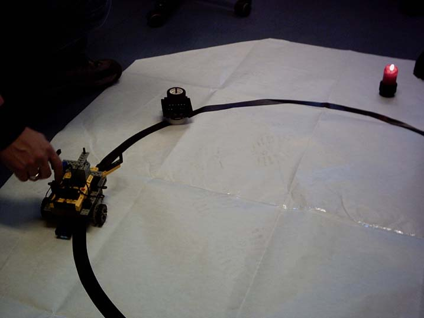
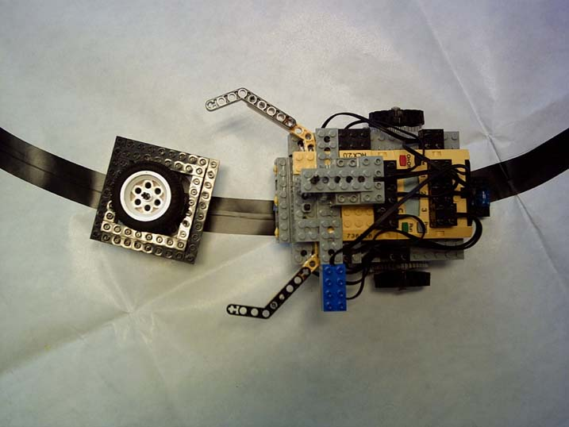

EMBEDDED SOFTWARE ENGINEERING
Butler James
TEAM
Table of Contents
Abstract
Roboter James and utensils
Operating System and programming language
Software Modi
Software Tasks
Pictures
Videos
ABSTRACT
James is a LEGO-mindstorm-roboter. He lives in a small room with a plant and one window. James' job is to check
that the plant is getting enough light.
Sometimes the window changes its position in the room.
So James always has to put the plant to the window, if the window changes its position.

We are going to use a candle and a piece of lego instead of the window and the plant.
Roboter James and utensils
Here you can see our roboter James:
That's the plant, the light source and the room. The black line is the border of the room and James must not leave the room.

Operating System and programming language
We use the BrickOS as operating system for the RCX and the programming language C.
Software Modi
We have three software modi in our System:
- Seeking for the plant on the circle
- Seeking for the window (where the candle's position is close to the room)
- Observe the window - if the window changes its position, James has to work
Software Tasks
- Check room-line: Modi 1, 2, 3
- Seek window: Modi 2
- Touch sensor: Modi 1, 3
- Raise plant: Modi 1, 3
- Put plant: Modi 2
- Follow room-line: Modi 3
- Observe window: Modi 4
Pictures
Starting position:

Searching for the plant:

Finding the plant:
Waiting position:
Videos
Follow room-line:
Follow line (5.8 MB)
James is working (5.2 MB)